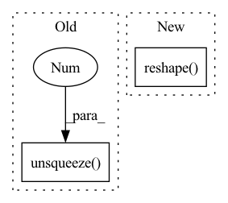

Pattern ID :1895

Before Change
lambda_max = LaplacianLambdaMax()(data).lambda_max
outputs = []
for time_step in range(num_of_timesteps):
outputs.append(torch.unsqueeze(self.cheb_conv(x=x[:,:,:,time_step], edge_index=edge_index,
batch = batch_size, lambda_max=lambda_max), -1))
spatial_gcn = F.relu(torch.cat(outputs, dim=-1)) // (b,N,F,T)
After Change
batch = batch_size, lambda_max=lambda_max), -1))
spatial_gcn = F.relu(torch.cat(outputs, dim=-1)) // (b,N,F,T)
"""
tmp = x.permute(2,0,1,3).reshape(num_of_vertices, in_channels, num_of_timesteps*batch_size) // (N_nodes, F_in, B*T_in)
tmp = tmp.permute(2,0,1) // (B*T_in, N_nodes, F_in)
output = F.relu(self.cheb_conv(x=tmp, edge_index=edge_index,
batch = batch_size*num_of_timesteps, lambda_max=lambda_max))
In pattern: SUPERPATTERN
Frequency: 3
Non-data size: 2
Instances
Fragment ID: 7216936
Project Name: benedekrozemberczki/pytorch_geometric_temporal
Commit Name: 509a541a01913f5b45859b801c48b5fd264bd94a
Time: 2021-03-18
Author: He_YX@outlook.com
File Name: torch_geometric_temporal/nn/convolutional/mstgcn.py
M Class Name: MSTGCN_block
N Class Name: MSTGCN_block
M Method Name: forward(4)
N Method Name: forward(4)
M Parent Class: nn.Module
N Parent Class: nn.Module
M File Name: torch_geometric_temporal/nn/convolutional/mstgcn.py
N File Name: torch_geometric_temporal/nn/convolutional/mstgcn.py
M Start Line: 36
M End Line: 41
N Start Line: 44
N End Line: 48
'>
Before Change
expanded_indices = expand_dim(value_indices, dim=4, k=d_head, unsqueeze=True)
selected_values = expanded_values.gather(-2, expanded_indices)
out = (attn.unsqueeze(-1) * selected_values).sum(dim=-2)
out = out.transpose(1, 2).reshape(b, t, -1)
return self.to_out(out)
After Change
value_indices, attn = map(lambda x: x.reshape(-1, self.topk * h), (value_indices, attn))
out = self.values(value_indices, per_sample_weights=attn)
return out.reshape(b, t, e)
'>
Fragment ID: 7216937
Project Name: lucidrains/product-key-memory
Commit Name: 915dd922ef8e168f7970d5336d0ba79b4f57fe47
Time: 2020-06-06
Author: lucidrains@gmail.com
File Name: product_key_memory/product_key_memory.py
M Class Name: PKM
N Class Name: PKM
M Method Name: forward(2)
N Method Name: forward(2)
M Parent Class: nn.Module
N Parent Class: nn.Module
M File Name: product_key_memory/product_key_memory.py
N File Name: product_key_memory/product_key_memory.py
M Start Line: 36
M End Line: 71
N Start Line: 35
N End Line: 64
'>
Before Change
// (N, C, **) -> (N, C, D_j) -> (N, 1, C, D_j)
input_x = x.view(N, C, -1).unsqueeze(1)
// (N, C, **) -> (N, 1, **) -> (N, 1, D_j) -> (N, 1, D_j, 1)
context_mask = self.w_k(x).view(N, 1, -1).unsqueeze(-1)
context_mask = nn.functional.softmax(context_mask, dim=2)
// (N, 1, C, D_j) * (N, 1, D_j, 1) -> (N, 1, C, 1) -> (N, C, 1)
context = torch.matmul(input_x, context_mask).reshape(N, C, 1)
After Change
// (N, 1, D_j) -> (N, 1, D_j, 1)
context_mask = nn.functional.softmax(context_mask, dim=2).unsqueeze(-1)
// (N, 1, C, D_j) * (N, 1, D_j, 1) -> (N, 1, C, 1) -> (N, C) -> (N, C, **)
context = torch.matmul(input_x, context_mask).reshape(N, C).reshape(N, C, *([1] * self.dimension))
out = self.w_v1(context)
out = self.ln(out)
out = self.relu(out)
'>
Fragment ID: 7216935
Project Name: zjcv/zcls
Commit Name: 95d5e89780c4c971e89cbe93dff6556afe1211d4
Time: 2020-12-20
Author: wy163zhuj@163.com
File Name: zcls/model/layers/global_context_block.py
M Class Name: _GlobalContextBlockND
N Class Name: _GlobalContextBlockND
M Method Name: forward(2)
N Method Name: forward(2)
M Parent Class: nn.Module
N Parent Class: nn.Module
M File Name: zcls/model/layers/global_context_block.py
N File Name: zcls/model/layers/global_context_block.py
M Start Line: 70
M End Line: 80
N Start Line: 70
N End Line: 74